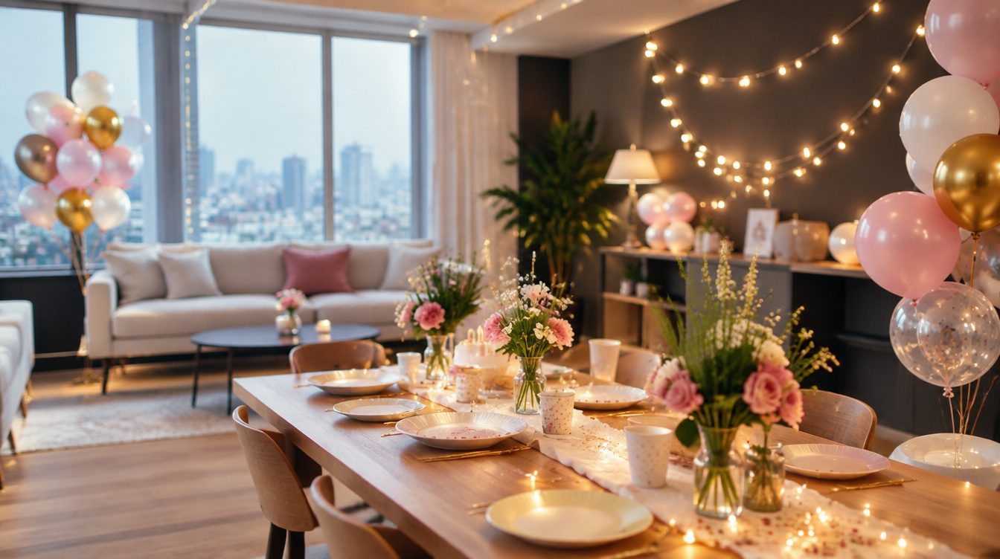
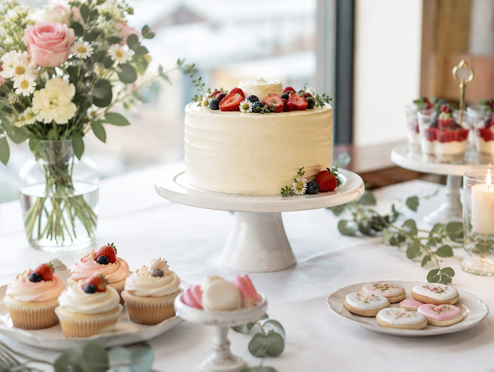

THE PLACE FOR YOUR NEXT GATHERING모임의 목적이 다르면,
모임의 목적이 다르면,
필요한 공간도 다르니까
인원과 이용 목적을 먼저 떠올려 보세요 사진부터 시설과 이용 조건까지 차근차근 살펴보세요


PLAN YOUR GATHERING
어떤 모임을 준비하나요
인원과 목적부터,
조건을 맞춰봅니다
모임의 목적과 인원에 맞춰 필요한 시설과 이용 조건을 정리해 보세요
BEYOND THE PHOTOGRAPHS
사진으로 보이지 않는 조건
| 이용 목적 | 확인할 시설 | 함께 확인할 규정 |
|---|---|---|
| 대화와 모임 | 좌석 배치 · 테이블 | 정원 · 음식 반입 · 정리 |
| 촬영과 제작 | 자연광 · 전원 · 배경 | 장비 반입 · 소음 · 촬영 범위 |
| 회의와 워크숍 | 화면 · 음향 · 통신 | 이용 시간 · 추가 인원 |
HOUSE CHECK
입실 전에 정할 것들
이용 시간과 준비 · 정리 시간
대여 시간에 준비와 정리가 포함되는지, 입퇴실과 초과 이용 조건을 확인합니다
비품 · 음식 · 장비 반입
제공되는 비품과 외부 반입 허용 조건을 운영자에게 문의합니다
날짜 변경과 취소 규정
예약 채널과 이용 상품의 변경·취소 조건을 확인해야 합니다